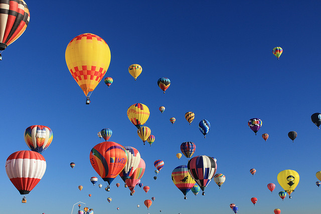

Festival - It makes you excited.
1. An organized series of acts and performances
2. A day or period of time set aside for feasting and celebration
Asia
- Thailand
- India
Europe
- Spain
- Italy
- German
- England
South/North America
- The United States
- Mexico
Oceania
- Australia



PHOTO GALLERY
Finland has the most interesting festival in the world, that is, mobile phone throwing. This is an international sport and it started in 2000. Participants throw mobile phones and compete the distance and technique. It has four groups and lots of people can enjoy this festival like children or elderly people. This festival is held in Savonlinna, Finland every year.
PICK UP - Finland
Finland has the most interesting festival in the world, that is, mobile phone throwing. This is an international sport and it started in 2000. Participants throw mobile phones and compete the distance and technique. It has four groups and lots of people can enjoy this festival like children or elderly people. This festival is held in Savonlinna, Finland every year.